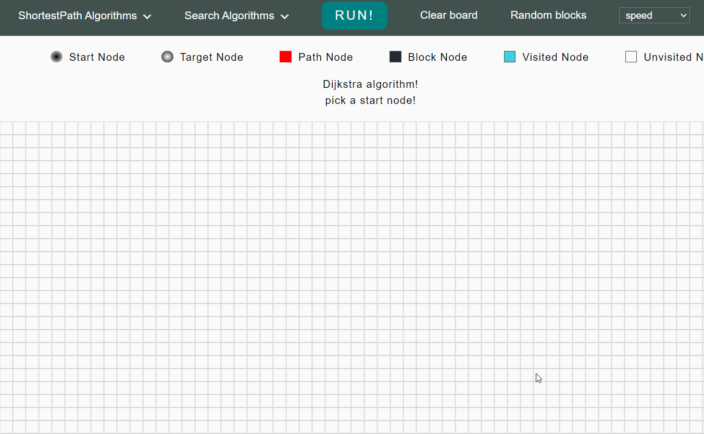

<div class="container">
    <div>
        <h2>Shortest-Path Algorithms Visualizer</h2>
        <p>
            At its core, a shortest path algorithm seeks to find the shortest path
            between two points, this application visualizes a various shortest path,
            search, and sort algorithms in action
        </p>
        <div class="links">
            <a href="https://hmza-smha.github.io/visualization/">Play Around!</a>
            <a href="https://github.com/hmza-smha/visualization">SourceCode & Documentation</a>
        </div>
        <br>
    </div>
    
</div>